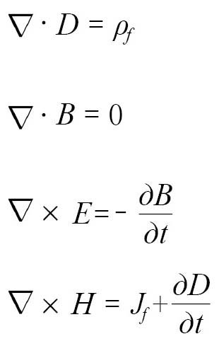

几年前，我在伦敦的英国皇家研究院（RI）参加过一次辩论会。辩论会的主题很有意思——谁是历史上的第一位科学家。4个人选都不出意外地在本书中占有一席之地。在辩论过程中，阿基米德和罗吉尔·培根（由我提名）的早期成果在伽利略面前相形见绌，后者凭借现代科学成就最终胜出。但是，研究院常驻科学史学家提名的候选人却是比伽利略在历史上出现的时间晚得多的詹姆斯·克拉克·麦克斯韦。
麦克斯韦角逐这个头衔有一个不是很公平的理由——“科学家”这个词在他那个时代才正式出现。在那之前，人们普遍使用的是一个拗口的名称——“自然哲学家”。1834年，人们认为，既然从事艺术工作的人被称作艺术家（artist），那么把从事科学研究的人称作科学家（scientist）似乎是合情合理的。（当时，他们提出了几个备选方案，值得庆幸的是，他们最终没有选择“博学之士”这个词。）但是，在那次辩论会上，人们支持麦克斯韦的理由却更加微妙：麦克斯韦是科学领域中让数学彻底摆脱现实的束缚，并在他提出的理论中有所体现的第一人。
当然，麦克斯韦不是第一个使用数学工具的科学家。我们知道，牛顿早已用他的数学知识构造出一个蔚为壮观的科学魔法世界。麦克斯韦在电磁学领域取得的研究成果虽然与光的本质有关，但是与数学的联系更加紧密。最终版本的麦克斯韦方程组浑然天成，充满美感，完全摆脱了与物理现实的联系，是直接源自数学公式的产物。同时，它也开启了离经叛道的痛苦历程。牛顿处心积虑地为自己的基础数学罩上了一层晦涩难懂的外衣，一旦脱下这层外衣，我们就会发现它特别简单。但是，漫不经心的观察者是无法理解麦克斯韦的研究成果的，他们唯一的选择就是毫不犹豫地接受它。这一点对于科学本身，对于帮助科学赢得社会支持，都具有非常深远的意义。
如果你从未听说过麦克斯韦，也不会令人感到特别奇怪。如果在科学家当中做一次问卷调查，请他们提供三个名字：历史上最伟大的物理学家、有史以来最受他们喜爱的物理学家和最被普通大众低估的物理学家，结果一定非常有意思。艾萨克·牛顿和阿尔伯特·爱因斯坦的名字肯定会出现在第一个名单中，理查德·费曼应该可以轻松地在第二个名单上名列前茅，而詹姆斯·克拉克·麦克斯韦则很有可能成功当选最被普通大众低估的物理学家。值得注意的是，爱因斯坦的书房墙壁上挂着三个人的照片：牛顿、法拉第和麦克斯韦。
介绍麦克斯韦生平的科普读物非常多，但是我认为仍然有必要告诉你们他这个不同寻常的姓名是怎么来的。麦克斯韦的父亲本来名叫约翰·克拉克，但是约翰的父亲继承了克拉克家族麦克斯韦系的庄园和头衔。约翰的父亲死后，约翰的哥哥又继承了这个头衔和位于米德尔比的主体庄园，约翰则继承了位于哥伦莱尔的子庄园，并且从此以后，他在姓名中添加了“麦克斯韦”，以强调这种关系。因此，詹姆斯出生后，他的姓就是克拉克·麦克斯韦，简写为麦克斯韦。
由于家境殷实，麦克斯韦从小就自由自在，而且有机会深入探索附近村庄的自然史。他后来进入爱丁堡大学，攻读物理学学士学位，之后又进入著名的剑桥大学。毕业后，他先后在剑桥大学、阿伯丁大学和伦敦大学国王学院任职。接着，他离开大学校园，回到哥伦莱尔庄园，潜心做研究。这种没有压力的生活让他感觉十分惬意。直到剑桥大学成立卡文迪什实验室（在这个新实验室的推动下，剑桥大学一举抢占了当代物理学研究的核心地位），冲着第一个卡文迪什教授的头衔，麦克斯韦才又回到剑桥大学，继续他的学术生涯。
在这段时间里，麦克斯韦的研究涉及诸多领域，主要包括运用统计工具从事热力学研究、利用偏振光检测透明材料的应变、探索颜色感知的本质，他甚至还拍摄出有史以来的第一张彩色照片。但是，他留给我们的最有价值的遗产是电磁学。麦克斯韦的前辈、电磁学大师迈克尔·法拉第在思考电磁学领域的各种现象时，曾经提出一个开创性的设想：电与磁会形成一种场。他提出的场概念与等高线图比较相似，相当于整个空间遍布了等高线，等高线的值表示电磁强度。如果一条导线穿过磁场的等高线，就会与磁场发生相互作用，进而产生电流。
法拉第毫无疑问是一位想象力丰富的科学家，但是他没有接受过专门的数学训练，在研究中几乎不会使用数学工具。也有一些科学家曾经用数字来表示电磁感应，但是，就像牛顿对万有引力的理解一样，他们也认为电磁力是一种间接的“超距力”。麦克斯韦无疑是第一个认识到法拉第的场概念的重要意义的人，并且他开始运用数学工具来研究电磁场的概念。从此以后，人类对电与磁的研究发生了翻天覆地的变化。
由于电磁场在三维空间中能无限延伸，在建立数学模型时需要计算空间各点电磁感应的总和。要解决这个数学问题很容易，牛顿与莱布尼茨的微积分恰好可以做到（尽管很少用于三维空间）。但是，麦克斯韦还需要在此基础上再向前一步。按照法拉第的理解，在电和磁形成的“力场”空间中，每个点的值就是磁体或者电荷产生的作用力。与质量是标量（仅有数量大小）不同，力是矢量，不仅有大小，而且有方向。质量一成不变，而力则必须有确定的作用方向。矢量是由两个数量综合而成的双重数值，在表示力时，它不仅描述了力的大小，还说明了力的作用方向。
在麦克斯韦潜心钻研电磁学的时候，人们刚刚发现了与矢量相对应的数学工具。发明这个工具显而易见很有必要，因为在处理一个矢量时，我们肯定不能把它视为一个简单的数字。比如，两个矢量相加，与其说是代数运算，不如说是几何操作。计算两个矢量之和的最简单方法就是画两个箭头，用箭头的长度表示矢量（例如力）的大小，用箭头的方向表示矢量的作用方向。我们先画一个箭头表示第一个矢量，然后以这个箭头的头部为起始点，画出第二个箭头。从第一个箭头的起始点至第二个箭头的头部画出第三个箭头，这个箭头就是两个矢量的和。但是，麦克斯韦需要解决的问题不只是计算两个不变量的和。在开始研究电磁学之后，他还必须尝试利用向量微积分，计算出空间各点因位置不同而变化不定的矢量。
当时，人们用力学世界观研究世间万物，麦克斯韦刚开始的时候也没有彻底放弃这个工具。他考虑过将电磁力（电与磁的综合体）看作并不存在的多孔固体中的流体，用流体代表电磁力的力线。同所有优秀的模型一样，他的这个想法不仅与建模时观察到的各项数值相互吻合，而且用模型做出的一些预测也得到了证实，其中包括电磁力的强度与距离的平方成反比。
麦克斯韦的“渗流”模型是一个非常有用的工具，但是它的作用也仅限于此。重要的是，代表力线的流体被固定在固体内部的通道中，但是在绝大多数情况下，例如，在越来越受欢迎的法拉第电动机和发电机中，力线并不是静止不动的。要表示这种情况，麦克斯韦必须彻底改变自己的模型，但他暂时无能为力，原因之一就是他在这前后收拾行李搬到了伦敦。5年之后，他才开始考虑这个问题。
在这种情况下，平庸的科学家很可能会修改自己的模型，以适应运动的电磁力。但是高明的科学家在意识到错误时，即使他们在这条道路上已经投入大量的时间和精力，他们也会当机立断，另辟蹊径。麦克斯韦果断地放弃了他的流体模型（即使是现在，运动的流体也是最难处理的物理学问题之一，很难得到精确的结果），转而到更熟悉的力学领域中寻求答案。他首先对磁体进行了研究，发现他的模型需要添加磁力线，而且磁力线上应该有朝着某个方向的应力（与异性磁极之间的吸引力相对应）和垂直压力（与同性磁极之间的排斥力相对应）。
他设想，磁体可能是由一系列可以自由旋转的微小电池构成的。地球等实体旋转时，在旋转力的作用下，赤道附近的地方会凸起，两极则会稍扁。与此同时，地球内部的微小电池也会发生同样的变化。如果一系列电池的旋转轴相同，在这些电池被压扁的时候就会在沿着旋转轴的方向上产生应力，而在微小电池凸起的地方就会产生向外的垂直压力。这种效应与他的电磁场模型正好一致。
至此，他的模型没有任何问题，但是在实际操作时，这些微小电池常常因为相互作用而僵持不下。原来，麦克斯韦忽略了电荷的影响作用。为了解决这个问题，他设想每个电池周围都有一些很小的球体，就像安装在转轴周围用来减小摩擦力的滚珠轴承一样。微小电池只能在固定位置旋转，而那些小球体却像电流一样，可以在原材料中穿行。尽管麦克斯韦的这个模型十分简陋，但令人吃惊的是，它与金属由原子构成、电子从原子中间穿行的结构非常接近。直到多年之后，人们才发现原子存在的证据（又过了更长时间才知道电子的存在）。
此时，麦克斯韦的模型已经可以解释某些电磁现象了，但是它无法解释电磁感应——这个物理现象对于变压器具有非常重要的意义。一条电线中的电流发生变化，为什么会导致另一条电线产生浪涌电流呢？法拉第正确地推断出电流在接通和断开时会产生磁场，而磁场可以通过另一条电线扩展、收缩，进而产生电流。麦克斯韦利用他的微小电池（此时他已经把这些电池改成六面体了）和小球体，成功地模拟了这个变化过程。为了模拟电磁感应现象，他对模型做了一些改进。当小球体从微小电池周围流过时，不同层次的电池会做出不同的反应，同时会对小球体的运动施加阻力，使这些小球体的速度逐渐减慢。
做了这些改进之后，他的模型已经比较完美了，唯一的缺陷就是不能很好地表现电荷之间的相互作用。梳理过干燥头发的梳子带有电荷，可以吸住碎纸屑，原因就在于电荷的相互作用。同很多前辈一样，麦克斯韦也发现遇到问题时暂且放一放，反而更容易找到解决办法。
他想到，纸、瓷器等绝缘体内部的小球体被固定在微小电池上，不能像金属内部的小球体那样自由流动。他又想到，如果绝缘体的微小电池具有弹性（在固定位置上可以发生扭曲），这些电池就可以像弹簧一样，通过扭曲将能量暂时储存起来。与之相比，金属的微小电池是刚性的，几乎不会发生扭曲。这个想法不仅说得通，它还可以高度精确地模拟真实材料的特性，从而帮助我们了解电磁力的真实属性。根据这个模型，静电力与弹簧的势能非常相似，磁力则更像转动能，而且两者一定会产生相互作用，不可能独自出现。所有问题似乎都得到了妥善解决。但是，就在此时，麦克斯韦却发现了一个足以让整个模型变得一文不值的大问题。
法拉第场被认为无处不在，甚至存在于真空中。由于空间具有极强的绝缘性，因此，根据他的模型，空间应该包含弹性电池。弹性物体的一个特点是它可以传递波。事实上，弹性是波传播的必备条件。由此可见，电磁波似乎可以在真空中穿行。此外，弹性电池的扭曲会产生磁场，磁场又会拉扯邻近的小球体，进而形成电场。麦克斯韦认为，真空中应该有一个包含电波和磁波的自持波，其中电波和磁波彼此垂直，而且都与自持波的传播方向垂直。同时，电波会产生磁波，磁波又会产生电波，循环往复。
当时，人们已经确认光是一种独特的波，在介质中传播时会发生左右摆动。（通常，只有在介质边缘传播时，波才会左右摆动。）人们还通过实验发现，光与磁之间似乎存在某种联系。麦克斯韦在想，根据他的模型，光就是一种电磁波，这个近乎荒谬的结论到底是不是真的呢？毕竟，光可以毫不费力地穿透真空，从太阳传播到地球。随后，麦克斯韦对这种假设的波的传播速度进行了估算，结果发现它与光在真空中的传播速度非常接近。这个发现进一步展现了这个模型的惊人效力。
毫无疑问，麦克斯韦在数学工具的使用方面远远超过他的前辈，这也是他当时最令人瞩目的成就。但是，在对气体黏滞性进行了初步研究之后，他又一次放弃了自己建立的模型，然后重新开始研究电磁学。这一次，他没有使用流体、旋转式弹性电池等类比模型，而是采用了现代物理学家都非常熟悉的方法，即建立纯粹的没有掺杂其他任何内容的数学模型。
虽然他使用的仍然是建立模型的方法，但这个模型仅仅是一些表现一系列逻辑法则的数字。模型中没有图，没有类比，也无法让人们轻松掌握其中的原理。麦克斯韦使用的是18世纪意大利数学家约瑟夫–路易斯·拉格朗日发明的方法——拉格朗日函数。借助拉格朗日函数，人们可以通过微分方程组，以及系统各部分的动量、系统动能等要素，描述系统随时间的变化而发生变化的情况。
拉格朗日函数就像一个黑箱（在数学家的眼中极具简洁雅致的美感），只需输入已知因素，摇动把手，就能得到答案。使用者根本不需要深入了解系统的物理属性，因为建模时使用的全部是数字。
为了满足电磁学的特殊要求，麦克斯韦进行了一番复杂的改进，把拉格朗日的研究成果变成了一个比较简单的方程组，用来描述电与磁的特性。麦克斯韦的后辈们利用现代符号表示法，对麦克斯韦方程组进行了完善和精简，最后得到了4个令人惊叹的简短方程：

对于现代物理学家而言，这些方程简单明了、司空见惯（然而大多数人却会惊叹于它们的复杂程度）。但是，在麦克斯韦提出这些方程组时，大多数科学家都觉得，单凭数学工具就构建出这个模型，实在是一件不可思议的事情。如此彻底地摆脱对现实世界的依赖，是很多人努力追求的目标，其中包括与麦克斯韦同时代的杰出人才、在更年轻时就已成为物理学教授的威廉·汤姆森（即开尔文勋爵）。由于没有人亲眼见过电磁波，因此人们对这个模型的反响并不强烈。但是，这套理论认为，只需让电荷沿着一片金属（现在的人称之为天线）运动，就可能产生电磁波。直到20年后，海因里希·赫兹用这种方法首次生成无线电波，麦克斯韦的这项突出成就才真正得到人们的普遍认可。
尽管麦克斯韦可以借助数学工具完成他的研究，但在当时，就连他本人也不相信由这些公式得出的所有推论。他喜欢借助数学工具建立模型，但是他认为那些数字不可能直接反映现实世界的本质。麦克斯韦曾经两次无视这些数字给他的提示：一次是他在提出一个假说时没有考虑这些数字；另一次是他直接忽略了这些方程给出的某个预测结果，原因是这个结果太奇怪了。
那个假说与以太有关。麦克斯韦的电磁波理论成立的前提条件是，真空有容留电磁场的能力，因为电磁波离不开电磁场。波的传播不需要任何介质。如果真的存在类似于普通物理材料的介质，这些波就会显得特别奇怪，因为介质会抑制波的左右振动，导致横波无法从介质中间穿过。通常，这样的波都在介质边缘传播（例如，在水面上或者在小提琴琴弦上）。能从介质中间穿过（例如声音在空气中传播）的波往往是压缩波，也就是波的振动方向与传播方向一致。
尽管麦克斯韦的模型明确地告诉他，光从恒星发出后，无须以太也能在真空中穿行，但他仍然坚信以太肯定存在。优秀的科学家几乎都兼具叛逆者和传统主义者的双重特点，他们肩负着破旧立新的使命，但是他们又不可能推翻一切、从头开始。他们必须依赖某些现存的观念，但是这些观念往往已经存在很长时间，以致失去了继续存在的意义。以太就是一个这样的概念。有趣的是，包括诺贝尔奖得主弗兰克·韦尔切克在内的一些现代物理学家认为，以太从一定意义上讲仍然是存在的，但是我们需要换一个思路，把数学意义上充斥整个空间的各种场（例如电磁场）视为以太。
麦克斯韦忽略的那个预测极具震撼性，令人震惊的程度远胜过以太是否存在这一问题。这个预测表明，一定存在可以回到过去的波。为了说明这个问题，我们有必要先花点儿时间，思考一个非常简单的数学问题。在下面这个方程中，x的值是多少呢？
x2 = 4
即使“代数学”这个词令你惊恐万分、深恶痛绝，解这样的方程你肯定也会胸有成竹。我们的任务就是找到平方为4的x的值。不难发现，2是满足条件的答案。但是，如果在学校考试中解这个方程，回答2只能得到一半的分数，因为答案不止一个。x等于–2时方程同样成立。也就是说，这个方程有2和–2两个解。
某些方程（例如二次方程，上面这个方程就是一个简单的二次方程）经常会出现有两个解的情况。麦克斯韦方程组在预测电磁波这种自持波存在的可能性时，同样遭遇了这种情况。这些方程的解不是一个，而是两个，并分别被称作“延迟波”和“超前波”。根据这些方程，当我们熟悉的电磁波（包括无线电、X射线、伽马射线在内的所有光）从A传播至B时，这些波都是延迟波。但是，这些方程还描述了第二种波，即从B传播至A的超前波。在延迟波到达B的那一瞬间，超前波从B出发并逆时传播，在延迟波离开A的瞬间到达A。
这个预测显然面临两大难题。难题之一是，任何人都没有见过超前波。如果超前波真的存在，那么它们似乎可以完成时光倒流这种不可能实现的壮举。尽管数学上没有给出任何提示，告诉人们应该只保留其中一个解，忽略另外一个解，但是大家都这样做了，因为他们认为那个解非常奇怪，不应加以考虑。数学工具似乎给出了一个与现实世界格格不入的预测结果，但是，由于这些方程式完美地描述了电与磁的其他特点，所以人们无法弃之不用。
直到20世纪40年代，美国的两名物理学家约翰·惠勒和理查德·费曼才发现超前波不仅是这些方程的一个预测结果，它还可以在物理学领域发挥重要作用。尽管科学的发展在一定程度上需要科学家解放思想，但是既有的科学理论对大多数科学家的阻碍作用仍然十分明显。然而，惠勒和费曼都十分开明，不会被常识遮住双眼。
为了解释光与物质之间的相互作用，费曼等人创立了量子电动力学（QED）这个物理学分支，而走在时间前面的超前波将帮助他们解决一个问题。量子电动力学常常会引出数学意义上的无穷大概念（参见第12章），这个缺点不仅会影响量子电动力学的发展，还会给量子色动力学等现代理论惹来麻烦。当惠勒和费曼提出他们的大胆想法时，量子电动力学面临的电子反冲问题就属于这一类型的麻烦。如果原子中电子的能量降低并释放出一个光子，这个电子就会发生反冲，这与枪支发射子弹的情形十分相似（光子没有质量，但是它们有动量，而动量一定是守恒的）。
要让电子发生反冲，电子的电场必须作用于电子自身，因此它们实际上构成了一个反馈回路，而且会导致无穷大的结果。但是，当时的人已经知道电子会不停地释放光子，我们看到的光大多就是这样产生的。惠勒和费曼发现，如果每次产生的光子不止一个，而是两个，而且其中一个是逆时运动的超前光子，在解释反冲问题时就不会导致无穷大这种令人无法解释的结果了。
毫无疑问，惠勒和费曼的研究得出了一个有用的结果，但是人们一直认为这是一种效果不错的数学魔术，对于揭示现实世界的本质没有任何启示作用。当然，使用过这个研究方法的人大多（不包含惠勒和费曼）不认为物质世界中真的存在超前波和超前光子，但是这个例子再次说明数字可以产生与实际观察相匹配的结果（尽管本例中的这个结果有点儿出乎人们的意料）。常识告诉我们，波不可能进行逆时传播，但是数学工具却告诉我们相反的预测结果。事实证明，数学工具做出的稀奇古怪的预测，与更加直接的研究方法相比，其反映现实的效果更好。
对于现代数学界而言，无论我们怎么理解麦克斯韦方程组的解，这些方程都没有多大的难度，尽管当初提出这些方程的人是一个天才。然而，正如与麦克斯韦同时代的格奥尔格·康托尔发现的那样，即使是专业的数学人员，也会遇到解决不了的难题。